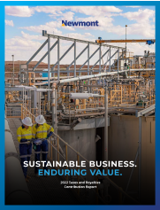
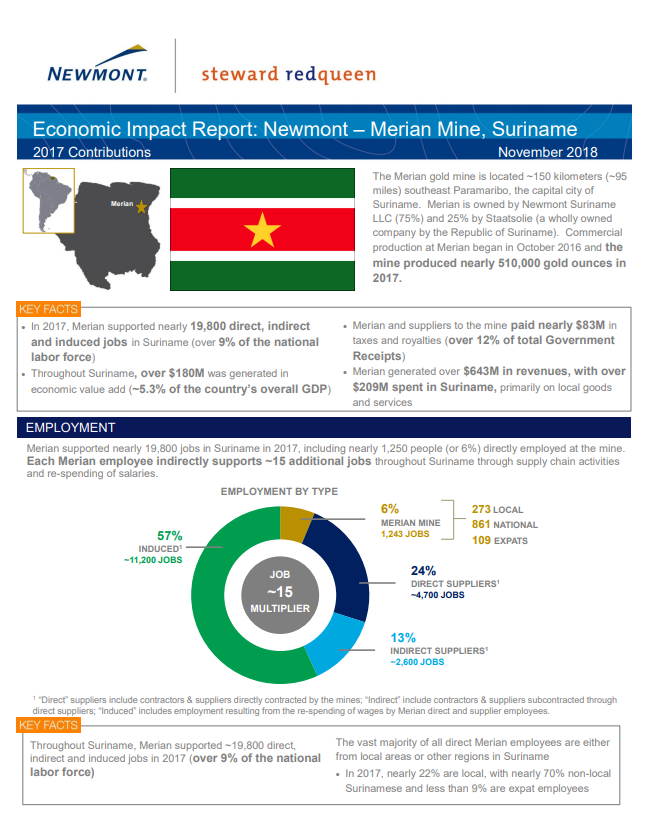

Voluntary Initiatives for Good Governance, Transparency, and Accountability
Our commitment to promoting good governance, transparency, and accountability is evident through our active participation in various voluntary initiatives:
- EITI (Extractive Industries Transparency Initiative): A collaborative effort involving governments, companies, investors, and NGOs. We support its implementation in countries where we operate and actively engage in multi-stakeholder groups in Suriname, Ghana, Peru, and Mexico. Additionally, we are involved in the Australian government's evaluation of applying the EITI through our support of the Minerals Council of Australia.
- ESTMA (Extractive Sector Transparency Measures Act) with the Canadian Government: We have decided to discontinue business due to concerns about violations of our established position and policy with the World Economic Forum’s Partnering Against Corruption Initiative. Our commitment to zero tolerance for bribery remains firm, and we will continue disclosing other payments made to governments as per our supporting frameworks. Past ESTMA reports are available on our website.
- Partnering Against Corruption Initiative: As a founding member of the World Economic Forum’s initiative, we pledge zero tolerance for bribery and commit to implementing a company-wide anti-corruption program. We have consistently supported Publish What You Pay, an international coalition advocating for transparency and accountability in the extractive industries. Our leadership in revenue transparency, through participation, engagement, and reporting, is a competitive differentiator, and we actively collaborate with others to implement best practices.
Taxes and Revenue

Click here to view the tax report. The taxes and royalties we pay to national and local governments are important sources of income, particularly in countries where the mining and natural resources industries are significant contributors to the national economy. As part of our commitment to tax transparency, in 2022 we published our inaugural Taxes and Royalties Contribution Report. In addition to discussing our tax governance framework, strategy, approach to tax planning and stakeholder engagement, the report details Newmont's significant economic contributions to host communities and governments. The disclosures in the report align with the requirements of the GRI 207: Tax 2019 global standard for tax transparency and the Australian government’s Tax Transparency Code, a voluntary framework for businesses to detail their tax affairs. In 2022, we engaged with NGOs to discuss our tax transparency journey, and we plan to continue these discussions in 2023.Economic Impacts
Our membership and active involvement in the following voluntary initiatives also support efforts to promote good governance, transparency and accountability:
- EITI: Founding member, active in Suriname, Ghana, Peru, and Mexico.
- ESTMA: Annual reports available on our website.
- Partnering Against Corruption Initiative: Zero tolerance for bribery commitment.
- Publish What You Pay: Advocates for transparency and accountability in extractive industries.
- ICMM: Active member, chairing the Mineral Resource Governance Working Group.
Community Investments
Our Community Investment and Development Standard guides our approach to working with host communities to address challenges, catalyze long-term socio-economic development and minimize dependency on the mine during operations and post-closure. Through baseline studies, assessments and government development plans, and meaningful community engagement, each site develops a community investment approach that aligns with community priorities and identifies partnership opportunities and available resources. Sites must review and update their respective strategies a minimum of every five years. We make direct investments in community infrastructure and social programs in partnership with the host communities and governments to progress socio-economic development. Investments are made through formal agreements with local and Indigenous communities, development foundations, trust funds and endowments, or direct funding in support of community priorities during the mine life and after operations cease. The formal agreements and foundations are created through collaborative processes with local stakeholders and include boards and councils with community representatives to ensure community participation and ownership. We also pursue partnerships with NGOs, development agencies and nonprofit organizations — such as the InterAmerican Development Bank in Argentina, the Deutsche Gesellschaft für Internationale Zusammenarbeit in Ghana, and Crown Agents in Suriname — and government agencies to ensure our investments effectively address local challenges and opportunities.
Interview With Dr. Thomas Brady (Colorado School of Mines)
Watch it here.Dr. Brady, currently teaching at Mines, has had an ecstatic career as an Economist for Newmont for 12 years, bringing valuable insights and expertise. We highlight his perspective in the ongoing revision of the sustainability report. In summary, the interview provides valuable insights into the complexities of balancing economic interests, environmental sustainability, and corporate social responsibility in the mining industry. Dr. Brady's extensive experience in the field allows for a nuanced discussion on various aspects of mining operations, particularly focusing on the economic impact studies he conducts for mining companies like Newmont. One noteworthy aspect being discussed is the increasing emphasis on ESG (Environmental, Social, and Governance) metrics within the industry. Dr. Brady acknowledges the evolving and ever-changing nature of these metrics and highlights their relatively recent integration into the decision-making processes of mining companies. He emphasizes the importance of continually refining these metrics to provide a more accurate representation of a company's commitment to sustainable practices. A significant quote from Dr. Brady touches on the challenges of incorporating ESG factors, stating, "It's still a pretty immature side of things. It's only been within the last 10 years that these ESG financial metrics have kind of come into play." This observation underscores the ongoing development of sustainable practices within the mining sector. The interview also delves into the delicate balance between corporate profitability and meeting the needs of local communities and governments, directly relating to many ideas presented by Li’s article. Dr. Brady highlights the negotiation process required to address conflicting interests, emphasizing the importance of effective communication and adaptability. Overall, the interview sheds light on the intricate dynamics inherent in the mining industry, with Dr. Brady providing valuable perspectives on economic considerations, environmental impact, and the evolving landscape of corporate responsibility. The discussion underscores the industry's commitment to transparency through sustainability reports and economic impact studies, offering stakeholders a comprehensive view of a company's operations and contributions to the communities in which they operate.
 Suriname Economic Impact Report 2017